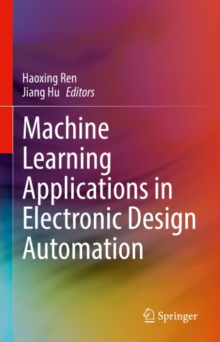

Mark Ren
I'm an EDA and AI R&D leader with 26 years spanning IBM Research and NVIDIA Research, driving design automation innovations that power modern chip design.
At IBM, I worked on physical design and logic synthesis tools and methodology. My works were used by IBM design teams to design ASIC and multi-GHz processors (Incremental Placement, ECO synthesis, Datapath optimization, etc). I received the IBM Corporate Award for my work on improving microprocessor design productivity.
At NVIDIA, I built a research team of 10+ researchers, led multiple flagship programs, and helped establish NVIDIA as a recognized leader in AI for chip design and GPU-accelerated EDA. I spearheaded the modern GPU-accelerated EDA movement, driving adoption of deep-learning frameworks to unlock performance and scalability for EDA workloads. I also led the first industrial LLM-for-chip-design effort, ChipNeMo.
My work spans design automation across digital, analog, and PCB, and has been recognized with 2× DAC Best Paper Awards and 10+ Best Paper Awards / nominations across major EDA conferences; I've delivered keynotes at Cadence, Synopsys, TSMC, Intel, and Silicon Labs, taught AI-for-chip-design tutorials at DAC and Hot Chips, served as Chair of the LLM Aided Design conference and on steering/organizing committees including ICCAD and ISPD, and I'm an IEEE Fellow—with work covered by WIRED, Fortune, EE Times, and more.
I'm now building Agentrys to bring Agentic Design Automation to chip design—leveraging today's AI to go beyond traditional EDA and reimagine how chips are built. I'm always happy to connect with design leaders, collaborators, investors, and exceptional engineers/researchers at the intersection of agent systems and EDA.
Google Scholar: https://scholar.google.com/citations?user=y-TNUJ4AAAAJ&hl=en
LinkedIn: https://www.linkedin.com/in/mark-h-ren-4837318/
Recent Talks
- Nov 2025, Panel at SC25: "Generative AI for Chip Design: Are We There Yet?"
- Nov 2025, Keynote at ICCD 2025: "AI for Hardware Design: From Fine-Tuned Models to Autonomous Agents"
- Oct 2025, invited talk at NSF Workshop on AI + HW 2035: Shaping the Next Decade
- Oct 2025, Keynote at Intel on Agentic AI and Silicon Design
- Oct 2025, Keynote at EDPS 2025
- Oct 2025, Invited seminar at Berkeley Wireless Research Center (BWRC)
- Sep 2025, Keynote at Synopsys AI Summit
- Sep 2025, Invited talk at MLCAD, "Scalable Physical Design Optimization with GPU Acceleration and Generative AI"
- Sept 2025, Speaker at IEEE SSCS Webinar: "From Words to Circuits: Agentic AI, Foundation Models, and Open EDA Workshop"
- Jun 2025, Earlier Career Workshop at DAC 2025, "Academic and Industry Collaborations"
- May 2025, Keynote at Synopsys GPU Summit: "GPU-Accelerated EDA: Challenges and Opportunities"
- Apr 2025, Keynote at ISQED: "AI for Chip Design: Unlocking New Frontiers in Automation and Scaling"
- Apr 2025, Invited seminar at Stanford
- Feb 2025, invited talk at Nature Conference on Materials for AI and AI for Material, Korea: "AI For Chip Design"
- Dec 2024, Invited talk at EDA Workshop at NeurIPS 2024, "Scaling Physical Design with Generative AI and Gradient-based Methods on GPU"
- Nov 2024, invited talk for IEEE CASS Taipei Chapter
- Nov 2024, Invited talk at NSF Workshop on AI4HW and HW4AI, "Generative AI for Chip Design"
- Nov 2024, Panelist at NSF Workshop on "ImageNet" for EDA
- Oct 2024, Guest Lecture at University of Texas at Austin
- Oct 2024, Keynote at Cadence JUG, "Generative AI for Design and Verification"
- Oct 2024, Invited seminar at TSMC
- Oct 2024, Keynote at EDPS, "Towards Revolutionizing Chip Design with AI: The Integration of AI and Algorithms"
- Aug 2024, Tutorial at HotChips 24, "Introduction to AI for Chip Design", "LLM Agents for Chip Design"
Selected Publications
- Autonomous Code Evolution Meets NP-Completeness
- Comprehensive Verilog Design Problems: A Next-Generation Benchmark Dataset for Evaluating Large Language Models and Agents on RTL Design and Verification
- INSTA: An Ultra-Fast, Differentiable, Statistical Static Timing Analysis Engine for Industrial Physical Design Applications, Best Paper Award @ DAC 2025
- GEM: GPU-Accelerated Emulator-Inspired RTL Simulation, Best Paper Nomination @ DAC 2025
- VerilogCoder: Autonomous Verilog Coding Agents with Graph-based Planning and Abstract Syntax Tree (AST)-based Waveform Tracing Tool
- Cypress: VLSI-Inspired PCB Placement with GPU Acceleration, Best Paper Award @ ISPD 2025
- LEGO-Size: LLM-Enhanced GPU-Optimized Signoff-Accurate Differentiable VLSI Gate Sizing in Advanced Nodes, Best Paper Nomination @ ISPD 2025
- Large Language Model (LLM) for Standard Cell Layout Design Optimization, Best Paper Award @ 1st IEEE International Workshop on LLM-Aided Design, 2024
- RTLFixer: Automatically Fixing RTL Syntax Errors with Large Language Model
- Novel Transformer Model Based Clustering Method for Standard Cell Design Automation, Best Paper Award @ ISPD 2024
- ChipNeMo: Domain-Adapted LLMs for Chip Design
- VerilogEval: Evaluating Large Language Models for Verilog Code Generation
- TransSizer: A Novel Transformer-Based Fast Gate Sizer, Best Paper Nomination @ ICCAD 2023
- AutoDMP: Automated DREAMPlace-based Macro Placement
- Placement Optimization via PPA-Directed Graph Clustering, Best Paper Award @ MLCAD 2022
- NVCell: Standard Cell Layout in Advanced Technology Nodes with Reinforcement Learning
- GRANNITE: Graph Neural Network Inference for Transferable Power Estimation
- ParaGraph: Layout Parasitics and Device Parameter Prediction using Graph Neural Networks
- PowerNet: Transferable Dynamic IR Drop Estimation via Maximum Convolutional Neural Network
- DREAMPlace: Deep Learning Toolkit-Enabled GPU Acceleration for Modern VLSI Placement, Best Paper Award @ DAC 2019
- High Performance Graph Convolutional Networks with Applications in Testability Analysis
- RouteNet: Routability prediction for Mixed-Size Designs Using Convolutional Neural Network
- Network flow based datapath bit slicing, Best Paper Award @ ISPD 2013
- DeltaSyn: an efficient logic difference optimizer for ECO synthesis
- Diffusion-based placement migration
- Sensitivity Guided Net Weighting for Placement Driven Synthesis
Books


Services
- General Chair, ICLAD, 2025
- TPC Chair, LAD, 2024
- Executive Committee, ICCAD, 2024, 2025
- Steering Committee, ISPD, 2022, 2023, 2024, 2025